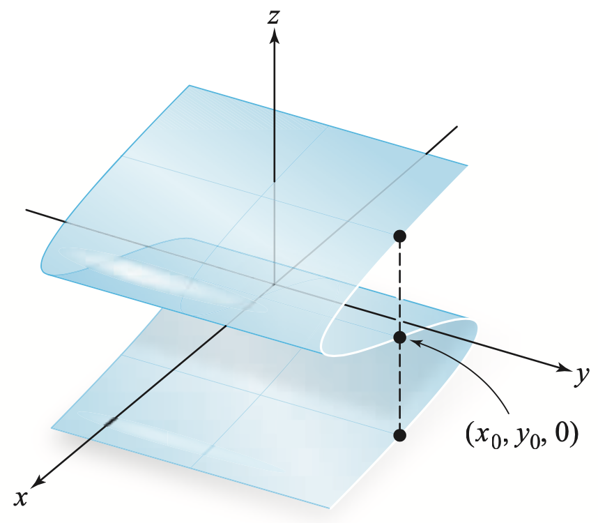
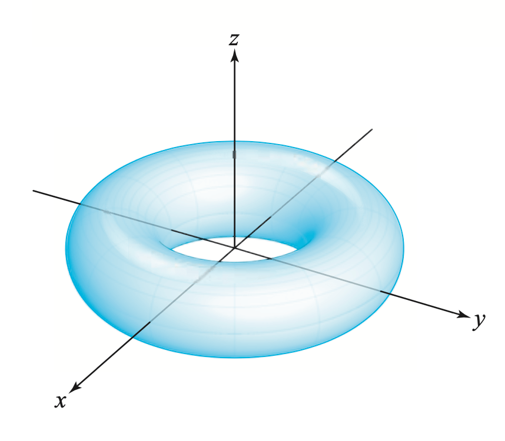

Calculus &
Linear Algebra II
Chapter 40
40 Parametrisation of surfaces in $\R^3$
By the end of this section, you should be able to answer the following questions:
- What does it mean to parametrise a surface in $\R^3$?
- How do you parametrise certain surfaces?
40.1 Parametric surfaces
Another way of representing a surface $S$ in $\R^3$ is by a parametrisation.
This
is where the coordinate variables are functions of two parameters $u$ and $v$:
$$
x=x(u,v),\ \ y=y(u,v),\ \ z=z(u,v)
$$
and the vector
$$
\r(u,v) = x(u,v)~\i+y(u,v)~\j+z(u,v)~\k
$$
traces out the surface as $u,v$ vary over some region $D$ in the
"$uv$-plane".
So for every point $(u,v)$ in $D,$ there corresponds a point on
the surface $S$.
40.1 Parametric surfaces
The following diagram shows the point $P$ on the surface $S$ which corresponds to the point $(u,v)$ in the region $D$ in the $uv$-plane. As $(u,v)$ moves around all points in $D,$ the point $P$ moves around in $S,$ tracing out the entire surface.
40.1 Parametric surfaces
Note that a surface defined explicitly by $z=f(x,y)$ is equivalent to a parametrisation $$ \r(x,y) = x~\i+y~\j+f(x,y)~\k, $$ where we treat the coordinate variables $x$ and $y$ as the parameters. Note that we have not specified any bounds on the variables. Often the challenge is to not only find suitable functions for a parametrisation, but for a finite surface to determine bounds on the parameters.
What's the point to define parametrisations of surfaces?
A good motivation to use parametrisations is that sometimes surfaces cannot be the graphs of functions defined as
$z=f(x,y).$
|

|

|
What's the point to define parametrisations of surfaces?
Another reason is given by the limitations of the computer considering the expression $z= f(x,y).$ For example if we try to plot
$x^2+y^2+z^2=2^2.$
What's the point to define parametrisations of surfaces?
Hyperbolic helicoid
Klein bottle
Another super cool example 😃
40.2 Parametrising surfaces using cylindrical
and spherical coordinates
We can use our knowledge of cylindrical and spherical coordinates to parametrise certain surfaces with which these coordinates are naturally associated.
Recall cylindrical coordinates: $$ x=r\cos\theta,\ \ y=r\sin\theta,\ \ z=z. $$ Setting exactly one of the cylindrical coordinates to a constant value necessarily gives a parametric surface.
Parametrisation in MATLAB
% Define components as anonymous functions
fx = @(u,v) 1.4 * (exp(u/29) - 1).* cos(u) .* (cos(v/2)).^2;
fy = @(u,v) 1.4 * (1 - exp(u/29)) .* sin(u) .* (cos(v/2)).^2;
fz = @(u,v) .7 * (exp(u/29).* sin(v) - exp(u/16) - sin(v)+3);
% Plot surface
fsurf(fx,fy,fz,[0 6*pi 0 2*pi])
camlight % Fancy shading
title('Parametric surface')
xlabel('x');
ylabel('y');
zlabel('z');
box on % Add frame
Parametrisation in MATLAB

fx = @(u,v) 1.4 * (exp(u/29) - 1).* cos(u) .* (cos(v/2)).^2;
fy = @(u,v) 1.4 * (1 - exp(u/29)) .* sin(u) .* (cos(v/2)).^2;
fz = @(u,v) .7 * (exp(u/29).* sin(v) - exp(u/16) - sin(v)+3);
fsurf(fx,fy,fz,[0 6*pi 0 2*pi])
Plotting surfaces in Python
Plotting surfaces in GeoGebra
Example 1
Setting $z=2$ with $0\leq\theta\leq 2\pi,$ $0\leq r\leq 3$ describes a disc of radius 3, centred at the $z$ axis lying in the plane $z=2:$
Surface(r cos(θ), r sin(θ), 2, r, 0, 3, θ, 0, 2 π)
Example 2
Setting $r=5$ with $0\leq\theta\leq 2\pi,$ $1\leq z\leq 3$ describes the surface of a cylinder of radius 5 and of height 2 between $z=1$ and $z=3:$
Surface(5 cos(θ), 5 sin(θ), z, z, 1, 3, θ, 0, 2 π)
Example 3
Setting $\theta = \pi/2$ with $2\leq z\leq 4,$ $0\leq r\leq 1$ describes a rectangle lying in the $yz$-plane. Another description of the same surface would be $x=0, \ \{ (y,z)\ |\ 0\leq y\leq 1,\ 2\leq z\leq 4\}:$
Surface(r cos(π/2), r sin(π/2), z, r, 1, 3, z, 2, 4)
40.2.1 Parametrise the paraboloid $z=1-x^2-y^2$ for $z\geq 0.$
How can you do this?
Now consider spherical coordinates
Recall spherical coordinates: $$ x=r\cos\theta\sin\phi,\ \ y=r\sin\theta\sin\phi,\ \ z=r\cos\phi. $$
Setting exactly one of the spherical coordinates to a constant value necessarily gives a parametric surface.
Example 4
Setting $r=2$ with $0\leq\theta\leq 2\pi,$ $0\leq\phi\leq \pi$ describes the surface of a sphere of radius 2 centred at the origin:

Surface(2 cos(θ) sin(ϕ), 2 sin(θ) sin(ϕ), 2 cos(ϕ), θ, 0, 2 π ,ϕ, 0, π)
Example 5
Setting $\phi=\pi/3$ with $0\leq r\leq 2,$ $0\leq \theta\leq 2\pi$ describes the open cone with angle $\pi/3$ to the positive $z$-axis, the "mouth" of which lies on the sphere of radius 2 and with vertex located at the origin:
Surface(r cos(θ) sin(π/3), r sin(θ) sin(π/3), r cos(π/3), r, 0, 2, θ, 0, π)
Example 6
Setting $\theta =0$ with $0\leq r\leq 3,$ $0\leq\phi\leq\pi$ describes the half disc of radius 3 lying in the $xz$-plane:
Surface(r cos(0) sin(ϕ), r sin(0) sin(ϕ), r cos(ϕ), r, 0, 2, ϕ, 0, π)
40.2.2 Parametrise the part of the sphere $x^2+y^2+z^2=16$ that lies between the planes $z=2$ and $z=-2.$
How can you do this?
Plotting surfaces in Desmos
See online demo here
Surface plotter
40.3 Tangent planes
Let $S$ be a surface parametrised by $$ \r(u,v) = x(u,v)~\i+y(u,v)~\j+z(u,v)~\k. $$
Here we find the tangent plane to $S$ at a point $P$ specified by $\r(a,b)$. There are two important families of curves on $S$. One where $u$ is a constant, the other where $v$ is a constant.
40.3 Tangent planes
$\r(u,v) = x(u,v)~\i+y(u,v)~\j+z(u,v)~\k.$
Here we find the tangent plane to $S$ at a point $P$ specified by $\r(a,b)$. There are two important families of curves on $S$. One where $u$ is a constant, the other where $v$ is a constant.
The diagram below shows the relationship between horizontal and vertical lines in $D$ (in the $uv$-plane) and curves on $S$.
40.3 Tangent planes
Setting $u=a$ defines a curve on $S$ parametrised by $\r(a,v)$, for all values of $v$ such that $(a,v)$ lies in $D$. A tangent vector to this curve at $P$ is
$\ds r_v = \frac{\partial x}{\partial v}(a,b)~\i+\frac{\partial y}{\partial v}(a,b)~\j+\frac{\partial z}{\partial v}(a,b)~\k.$
Similarly setting $v=b$ defines another curve on $S$ parametrised by $\r(u,b)$. A tangent vector to this curve at $P$ is
$\ds \r_u = \frac{\partial x}{\partial u}(a,b)~\i+\frac{\partial y}{\partial u}(a,b)~\j+\frac{\partial z}{\partial u}(a,b)~\k.$
If $\r_u$ and $\r_v$ are continuous and $\r_u\times\r_v$ is never $\mathbf 0$ inside $D$ (we make an exception for points on the boundary of $D$), we call the surface smooth (it has no "kinks").
40.3 Tangent planes
For a smooth surface, $\r_u\times\r_v$ is a normal vector at any point inside $D.$ This vector evaluated at $(u,v)=(a,b)$ is also normal to the tangent plane at the point $P=(x(a,b),y(a,b),z(a,b)).$
The equation of the tangent plane at $P$ is given by
$\ds \big(\r_u(a,b)\times\r_v(a,b)\big)\cdot \big((x~\i+y~\j+z~\k) - \r(a,b)\big)=0.$
40.3.1 Find the tangent plane to the surface parametrised by $\,\r(u,v) = u^2~\i+v^2~\j+(u+2v)~\k\,$ at the point $\,(1,1,3).$
$\r_u $ $=2u~\i + 0~\j + 1~\k,$ $\quad $ $\r_v $ $=0~\i + 2v~\j + 2~\k $
$\r_u\times\r_v$ $= \left| \begin{array}{ccc} \i & \j & \k\\ 2u & 0 & 1 \\ 0 & 2v & 2 \end{array} \right|$ $ =-2v~\i - 4u~\j + 4uv~\k$
Point $(1,1,3) $ corresponds to $u=1,v=1,$
since $u^2=1, ~v^2=1,~u+2v=3;$
and $\r_u\times \r_v\big|_{(1,1)} =-2~\i-4~\j+4~\k .$
40.3.1 Find the tangent plane to the surface parametrised by $\,\r(u,v) = u^2~\i+v^2~\j+(u+2v)~\k\,$ at the point $\,(1,1,3).$
$\r_u\times\r_v $ $ =-2v~\i - 4u~\j + 4uv~\k$
and $\r_u\times \r_v\big|_{(1,1)} =-2~\i-4~\j+4~\k .$
Using the equation of the tangent plane
$\ds \big(\r_u\times \r_v\big|_{(1,1)} \big)\cdot \big((x~\i+y~\j+z~\k) -( \i+\j+3~\k)\big)=0,$
we obtain
$\ds-2(x-1)-4(y-1)+4(z-3)=0.$